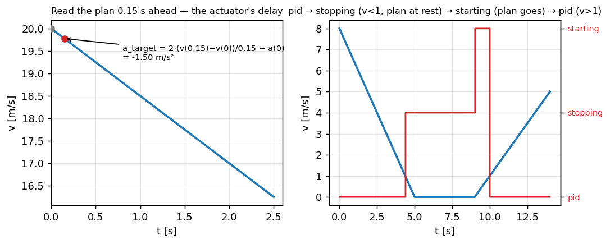

Продольное управление — читать план там, где будет актуатор#
Продольный планировщик отдаёт траекторию скорости, а этот контур превращает её
в запрос ускорения — так же, как угловой контур превращает кривизну в момент. Это тот
самый LongControl из upstream: пропорциональный закон, где ускорение плана идёт как feedforward, чтение
плана на 0.15 с вперёд, чтобы покрыть задержку актуатора, и автомат из четырёх состояний, благодаря которому
остановка получается настоящей остановкой.
Код: longitudinal/long_control.cpp; сам тик живёт в services/control.cpp рядом с поперечным законом.
Общие константы для примера — те же, что и в главе про планировщик:
import numpy as np
ACCEL_MIN, ACCEL_MAX = -3.5, 2.0 # the panda's envelope for a VW MQB [m/s^2]
Закон#
План — это траектория скорости на 33-точечной сетке модели, из которой 17 точек (2.5 с) отдаются в
Control. Моторный и тормозной контроллеры машины отвечают на запрос ускорения с опозданием около 0.15 с,
поэтому закон читает план на 0.15 с вперёд и переводит наклон скорости на этой задержке в то ускорение,
которое запрашивает:
T_MODEL = np.array([10.0 * (i / 32) ** 2 for i in range(33)])[:17]
DELAY = 0.15
def long_control(speeds, accels, v_ego, t_since_plan=0.0, kp=0.1):
v_now = np.interp(t_since_plan, T_MODEL, speeds)
a_now = np.interp(t_since_plan, T_MODEL, accels)
v_target = np.interp(DELAY + t_since_plan, T_MODEL, speeds)
a_target = 2.0 * (v_target - v_now) / DELAY - a_now # the slope over the delay, minus what we have
accel = kp * (v_target - v_ego) + a_target # VW: kp 0.1, ki 0, kf 1
return float(np.clip(accel, ACCEL_MIN, ACCEL_MAX)), v_target, a_target
speeds = np.maximum(0.0, 20.0 - 1.5 * T_MODEL)
accels = np.full(17, -1.5)
cmd, v_t, a_t = long_control(speeds, accels, v_ego=20.0)
print(f"braking plan at -1.5: v_target {v_t:.2f} m/s, feedforward {a_t:.2f}, command {cmd:.2f} m/s^2")
assert abs(a_t + 1.5) < 1e-9, "on a plan of constant acceleration the slope gives back that acceleration"
Откуда берётся \(2(\cdot)/\Delta\): за задержку \(\Delta = 0.15\) с скорость должна пройти от \(v_{\mathrm{now}}\) до \(v_{\mathrm{target}}\), пока ускорение линейно нарастает от нынешнего у машины \(a_{\mathrm{now}}\) до того, что мы запрашиваем, \(a_{\mathrm{target}}\). Среднее ускорение на этой рампе — \(\tfrac12(a_{\mathrm{now}} + a_{\mathrm{target}})\), откуда
На плане с постоянным ускорением формула возвращает ровно это ускорение (что фрагмент и проверяет). А на плане, который изгибается — машина в \(a = 0\), а план через 0.15 с хочет \(-1.5\), — она на один тик просит \(-3.0\) и тут же отпускает: запрос опережает план ровно на задержку, и машина за ним поспевает. Пропорциональный член \(0.1\,(v_{\mathrm{target}} - v_{\mathrm{ego}})\) мал намеренно: при kp 0.1 ошибка скорости 2 м/с добавляет всего \(0.2\) м/с² — ведёт feedforward, а P-член лишь подправляет дрейф.
{kind=link}

Рис. 36 Слева: план, прочитанный с упреждением на задержку актуатора. Справа: четыре состояния — pid в движении;
stopping, когда план стоит ниже 1 м/с (запрос уходит к −2 м/с² и удерживается); starting, когда план
трогается (+1 м/с² до 1 м/с); затем снова pid.#
Автомат состояний — вот что превращает остановку в настоящую остановку: ниже 1 м/с при стоящем плане
закон покидает пропорциональный режим и переходит к удержанию −2 м/с² с темпом 0.8 м/с³ — это stopAccel и
stoppingDecelRate из upstream, — потому что на 0.3 м/с P-закон только ползёт. Тонкость, которая стоила нам
вечера: stay_stopped в upstream читает флаг стоянки штатного ACC, а его нет, как только осью владеем мы;
подача туда простой скорости заставляла starting и stopping меняться местами на каждом тике.
Приёмка#
фрагмент точно возвращает постоянное ускорение плана и добавляет \(0.1\) м/с² на каждый м/с ошибки скорости;
автомат проходит pid → stopping → starting → pid на плане «остановка и трогание», удерживая −2 м/с² на месте;
одно предложение о том, почему
stay_stoppedне должен читать простую скорость.
Куда дальше#
Продольный планировщик — откуда берётся траектория скорости.
Угловой контур — поперечный внутренний контур, близнец этого.
Платформа — как ускорение становится
ACC_06/ACC_07на шине.
Дальше: Платформа